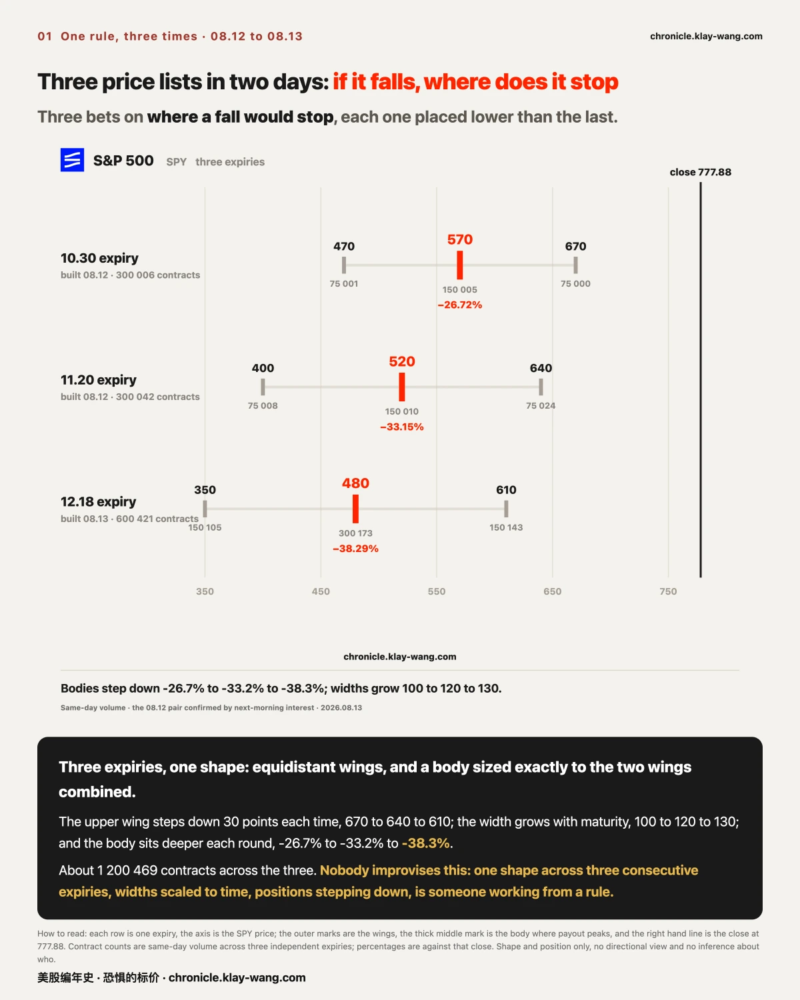
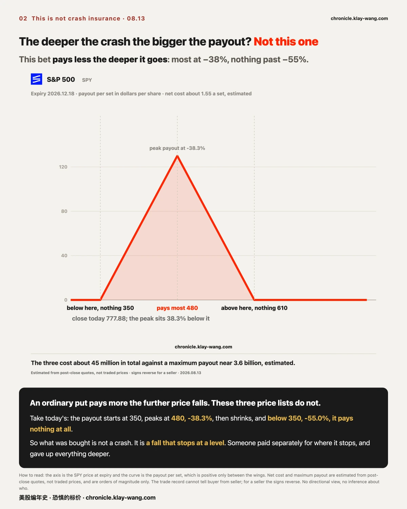
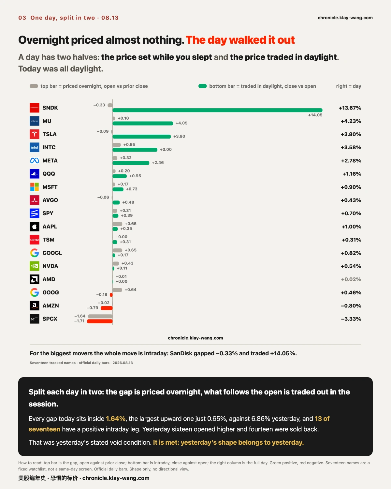
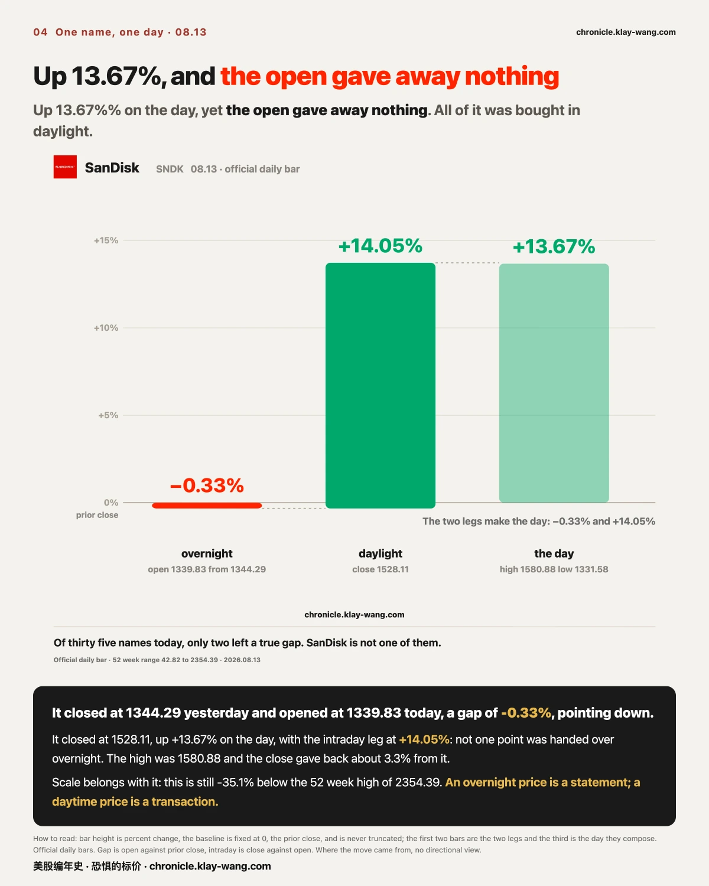
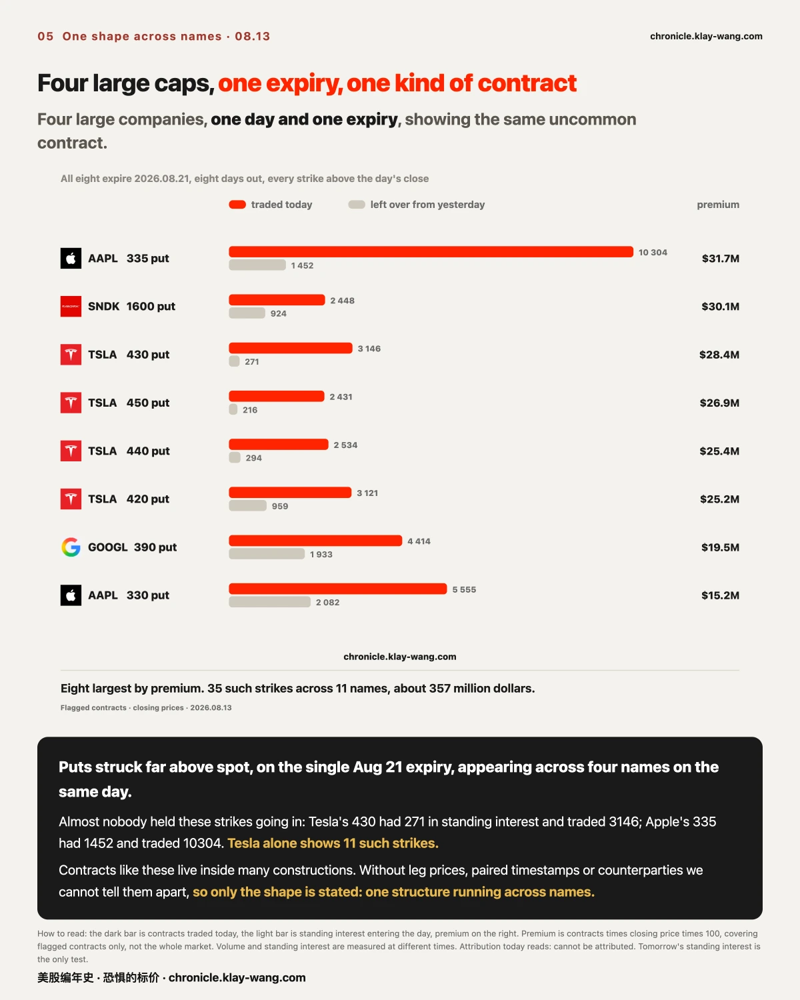
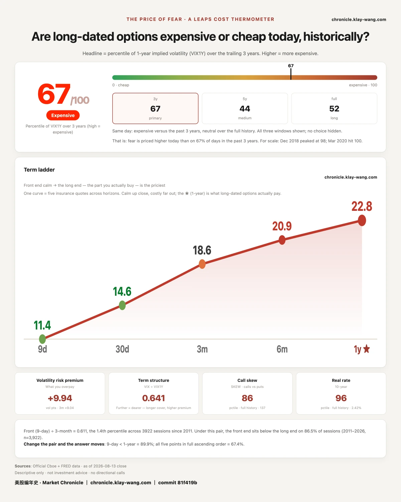

Section 1 is the main course: the far-dated set that appeared for the third time in two days, what it cost,
what it can pay, and what it is actually buying.
Sections 2 to 4 are the seventeen names split into two halves, SanDisk, and another shape across several large caps.
Section 5 is the scoreboard, and section 6 the daily gauge.
If you are short on time, section 1 and the last section will tell you what kind of market this was.

A PPI day, a warmer tone, and SPY closed at a record: an intraday high of 779.37 and a close of 777.88, with the
S&P 500 reaching 7816.70. (The SPY figure is an intraday high, not dividend adjusted.) The rest of today is worth more.
On Aug 12, two sets of identically shaped far-dated contracts appeared on SPY. On Aug 13 a third appeared,
larger than the first two combined. The specifications:
| Built | Expiry | Three strikes | Contracts | Middle strike vs today's close |
|---|---|---|---|---|
| Aug 12 | Oct 30 | 670 / 570 / 470 | 75000 / 150005 / 75001 | −26.7% |
| Aug 12 | Nov 20 | 640 / 520 / 400 | 75024 / 150010 / 75008 | −33.2% |
| Aug 13 | Dec 18 | 610 / 480 / 350 | 150143 / 300173 / 150105 | −38.3% |
About 1.2 million contracts across the three, all the same shape: three equidistant strikes, with the middle
one sized to exactly the sum of the outer two.
This shape was not improvised. The top strike steps down 30 points each time: 670, 640, 610.
The spacing widens as the expiry lengthens: 100, 120, 130. The middle strike sits deeper each round:
−26.7%, −33.2%, −38.3%. One shape across three consecutive expiries, widths scaled to time, positions
stepping down. That is someone executing a rule, not reacting.
An ordinary put pays more the further price falls. These three do not. Their payout is bounded:
on today's set it starts at 350, peaks at 480, then shrinks, and below 350 it pays nothing at all.
Above 610 it also pays nothing.
So what was bought is not a crash. What was bought is a fall that stops at a level.
Someone is not asking whether it falls, but where it stops if it does, and is paying separately for stopping
at −26.7%, −33.2% and −38.3%, while deliberately giving up everything deeper.
If you do not watch the market, three numbers are enough.
Yesterday's close was 772.49, today's close 777.88, a record, and today's intraday high 779.37.
The three sets are struck at 570, 520 and 480. Getting from 777.88 down to 570 means cutting more than a
quarter off today's price; down to 480 means cutting nearly forty percent.
They expire Oct 30, Nov 20 and Dec 18, so two and a half to four months from here.
Read together: on the day the index set its highest price on record, someone paid for a fall of a quarter to
forty percent landing two and a half to four months out, and explicitly gave up the payout for anything worse.
That is not a mood. It is a condition written on a contract that anyone can check.
The money, in scale: estimated from post-close quotes, the three cost about 45.25 million dollars net,
against a maximum payout near 3.6 billion if price settles exactly at the middle strikes.
These are post-close quotes, not traded prices, and serve as orders of
magnitude only. More important, the trade record cannot tell a buyer from a seller. If these were sold
rather than bought, every sign reverses: 45.25 million received, and up to 3.6 billion owed.
Today's 600 thousand contracts were done in 62 trades, 24, 21 and 17 across
the three strikes. Not many people each buying a little. A handful of prints, each of them large.
For the week: the index set the highest price in its recorded
history; the 30 year Treasury auctioned at the most expensive funding cost since 2001; and someone laid out, in
three goes, three price lists for where a fall would stop. Three things in one week, with no evidence linking them.
Whether the positions were actually built has a hard test. For the two from Aug 12, this morning's
standing interest matched the previous day's volume one for one, and today they barely traded: the money
came in and then stopped. Today's set is not yet testable. The three Dec 18 strikes carried 8307, 11086 and
6917 contracts of standing interest entering today. If tomorrow morning they jump to the 150000, 300000
and 150000 range, that is the third confirmation.
Contracts like these appear inside many constructions, and we have no leg
prices, no paired timestamps and no counterparty, so we do not write who did it or what they intended.
Attribution today reads: the structure is systematic, which we lean toward; motive and identity, cannot be
attributed.
The condition that would void this: tomorrow's standing interest at those Dec 18 strikes failing to follow today's volume, which would make this set intraday turnover rather than a position.

Yesterday this section was sixteen names opening higher and fourteen being sold from the open. Today the same table inverts.
A day's move is two segments. The gap at the open is a price posted overnight and pre-market.
What follows the open is a price traded out, one order at a time.
Today the gap segment is almost flat. Across seventeen tracked names every gap sits inside 1.64%,
the largest upward one just 0.65%, against 6.86% yesterday. Overnight gave almost no price at all today.
The price was walked out during the day. Thirteen of seventeen have a positive intraday segment; only three are negative:
Alphabet class C at −0.18%, Amazon at −0.79%, SpaceX at −1.71%.
For the biggest movers, nearly the entire move is intraday: SanDisk gapped −0.33% and traded +14.05%; Micron gapped +0.18% and traded +4.05%;
Tesla gapped −0.09% and traded +3.90%; Intel gapped +0.55% and traded +3.00%.
Three names gave three different kinds of rise on the same day, which makes a usable ruler:
| Name | Overnight | Daylight | Day | Shape |
|---|---|---|---|---|
| Netflix | +2.43% | +2.93% | +5.43% | priced overnight, and bought further during the day |
| SanDisk | −0.33% | +14.05% | +13.67% | almost nothing overnight, all of it traded out in daylight |
| Super Micro | +1.78% | +2.30% | +4.12% | reached 42.31 intraday and closed 39.16, part of it sold back |
Same direction, different origins. On the daily change alone, all three look identical.
A true gap up means the day's low is above the previous day's
high, so the session never once traded back inside yesterday's range. Netflix bottomed at 75.44 against
yesterday's 74.67; Super Micro at 38.20 against 38.15. Both qualify, and of thirty five names today only those
two do. SanDisk does not: its rise was walked out during the day.
Semiconductors rose broadly today, Intel +3.58%, Micron +4.23%,
SanDisk +13.67%, while AMD printed +0.01% overnight, 0.00% intraday and +0.02% on the day, essentially
unchanged, on the same day it announced plans to issue up to 5 billion dollars of bonds. Same day, no claim of
a link.
Placed side by side, the two days are a clean symmetry.
Yesterday money spoke overnight and took it back during the day. Today it barely spoke overnight, and the day walked itself to a record high.
This is also the condition attached to section 2 yesterday: if the intraday segment turned broadly positive the next day,
then yesterday's fade belonged to that day alone and was not a continuing shape. Thirteen positives today. Condition met.
As of today, yesterday's shape belongs to yesterday.
The condition that would void this: gaps widening again tomorrow with intraday turning negative, which would make today's symmetry a two-day coincidence rather than a rhythm.

The biggest gainer today is SanDisk, closing at 1528.11, up 13.67%. Where that number came from is unusual.
The prior close was 1344.29; today opened at 1339.83, a gap of −0.33%, essentially no gap at all, and pointing down.
Not one point of that 13.67% was handed over overnight. All of it was bought after the open.
Across the full universe of thirty five names today, only two left a true gap. SanDisk is not one of them.
Four numbers are enough here: yesterday's close 1344.29, today's open 1339.83, today's close 1528.11,
and an intraday high of 1580.88. The first to the second barely moved; the second to the third is the entire
day's gain. That is the whole meaning of an open that gave away nothing.
The intraday shape is concentrated. In the fifteen minutes from 11:00 to 11:15, price moved from 1402.14 to 1485.00, up 5.9%,
on 570549 shares, against an average near 230 thousand shares over the previous four bars.
The high was 1580.88, or +17.6%; the close gave back about 3.3% from that peak and held the rest.
The scale has to come with it or the number reads wrong: SanDisk closed 35.1% below its 52 week high of 2354.39,
and the 52 week low is 42.82. Its 13.67% and the index's 0.70% are not points on the same ruler.
On the options side there is a timestamp only a per-round record can show.
The 1390 call expiring Aug 21 had traded 532 contracts by 10:53, against 363 in standing interest. By 11:20 it had added 8.
It finished the day at 564, with standing interest still 363. That money was paid before the 11:00 bar, and the strike barely changed hands afterwards.
The full day's option ledger: 177.7 million dollars of premium on the call side against 68.2 million on the put
side, roughly 2.6 to one. The 1600 put traded 2448
contracts for 30.1 million and the 1550 put 1361 for 12.4 million. On the call side the notable strikes are not
the largest but 1455 and 1475, two non-standard levels: 22 and 37 contracts of standing interest entering the
day, and 690 and 649 traded. Someone reached for two strikes nobody else held.
Why today. SanDisk held an investor day and published a long-term financial model with company targets for
FY2028 to FY2030: revenue growing at a mid to high teens rate, non-GAAP gross margin near 80%, operating margin
near 75%, adjusted free cash flow margin near 50%, and all excess cash returned to shareholders once investment
is complete. The company also said it has signed agreements with 8 customers carrying committed volumes and
structured pricing, covering about half of FY2027 and about two thirds of FY2028 bit shipments.
SanDisk's fiscal year ends on the Friday nearest June 30 and FY2026 closed on 2026.07.03,
so FY2028 to FY2030 are not calendar 2028 to 2030 but three fiscal years starting July 2027, roughly a year
apart. Market-size figures quoted around the event are company and sell-side estimates, not facts, and are
relayed here as such.
Storage is a cyclical business: each technology node
brings more bits automatically, supply rises and price falls on its own, and gross margin swings across a wide
band. The company described the opposite move: cutting wafer output during node transitions, converting the
technology gain from more bits into more profit, and then using long agreements with committed volumes to turn
spot revenue into contracted revenue. The first changes earnings; the second changes the multiple the market
will pay, and the second is worth far more.
That produces a hook that settles quarter by quarter: a storage manufacturer saying it can sustain an 80% gross
margin is quoting a licensing-level number rather than a manufacturing one, and the same goes for two thirds of
FY2028 volume being locked in advance. Neither needs anyone's opinion. They report themselves every quarter, and
we will keep the tally.
That is all that can be said. Someone paid, at that strike, at that time, and the stock then moved 7%.
The trade record does not show who paid it or which side they took. Buying calls and selling calls look identical in it.
Nor is it enough to have moved the stock: the hedging demand behind 500 odd contracts is negligible against 570 thousand shares.
The test is tomorrow morning. If standing interest at that strike jumps to four digits, positions were opened. If it does not move, it was turnover.

The rarest thing today is not inside any single name. It is between several of them.
Apple, Tesla, Alphabet and SanDisk all showed the same kind of contract on the same expiry, Aug 21:
puts struck far above the current price, at strikes almost nobody held going into the day.
The day carried 35 such strikes across 11 names, roughly 357 million dollars of premium in total. The largest are below.
Contracts like these appear inside many different constructions. We do not have the price of each leg, the paired timestamps, or the counterparty, so we cannot tell them apart.
This section therefore does not say what it is. It says what shape it has: one expiry, several large caps, one structure, all on one day.
That is a single shape running across names, not a one-off in any of them. Attribution today reads: cannot be attributed.
The condition is written on the contract and anyone can check it. These strikes have to be reached before Aug 21 for any of it to pay.
The test is tomorrow morning, in whether standing interest at those strikes rises to the same order as today's volume.

Both conditions published yesterday are met.
First, the fence. We wrote: if the same fence broke, yesterday was a lucky hit rather than a correct price.
Today SPY cleared the upper edge by 2.62 points and closed 1.13 points outside it; the Nasdaq 100 cleared by
4.20 points and closed 2.31 points outside. Neither closed back inside. Condition met, and yesterday's line,
that the market had priced the event correctly in advance, is downgraded to a hit.
Second, the two-segment split (settled in section 2): thirteen of seventeen are positive intraday, so
yesterday's fade does not continue.
Then the two sets of positions from Aug 11. By the morning of Aug 13 they had settled in full:
all six strikes carried their volume into standing interest. The three expiring Oct 30 moved from 75000, 150005 and 75001 contracts traded
to 75405, 150506 and 75696 standing; the three expiring Nov 20 did the same, and today all six barely traded at all.
That money was real and it stopped once it was in, rather than cycling in and out the same day. The two sets cover late October and mid November, with a payout corridor from −13% to −39%.
On the day inflation data landed, someone paid to lay out a fourth quarter tail corridor, and 24 hours later the index set a record high.
One market, one week, two expressions that both cost money. Puts that far from spot exert almost no hedging pressure on market makers, so this cannot be said to have foretold anything.
One more thread closed today. SpaceX insurance costing more for one month than for one year, a shape we tracked for three days:
1.50 apart on Aug 11, 2.35 on Aug 12 and still widening. Today it is −0.54 and the shape is gone.
Of nineteen names only Broadcom still prices one month above one year, and that gap widened from 0.30 to 0.78.
What we could not reconcile gets said too. Tesla's 330 and 335 strikes and the four SpaceX strikes expire tomorrow, Aug 14.
Neither table carries an Aug 14 expiry today, so we could not read their current standing interest and this line stays blank, with settlement figures due tomorrow.

Today reads 67.2, shown as 67 out of 100. Yesterday was 61.9 and the day before 65.5.
Yesterday it fell 3.6 points. Today it rose 5.3. One year volatility is 22.82 against 22.62 yesterday.
Yesterday this section asked whether the long end would keep falling after 61.9 or stop.
The answer today is a third option: it neither kept falling nor stopped. It reversed.
The ladder is the better view. 11.37 at 9 days, 14.63 at one month, 18.61 at 3 months, 20.93 at 6 months, 22.82 at one year:
higher the further out, which is the normal shape. But compared with yesterday point by point, all five moved up. Not one is cheaper.
Read this section against section 1 and the day takes shape:
the index set an all time high, and on the same day the people who sell protection raised the price at every maturity from nine days to one year.
That is not a statement about mood. The desks that must quote a year forward pay for their own mistakes. Raising every point on the curve means their arithmetic changed.
It does not tell you what happens tomorrow. It tells you what the people who must quote the next year, and pay for quoting it wrong, charged today.
Fear-Price Index by Market Chronicle · Aug 13, 2026 · 67/100: one year volatility, VIX1Y, at 22.82, the 67th percentile of the past three years, higher means more expensive. Daily ledger and method → chronicle.klay-wang.com
One thing to be settled tomorrow, written here so there is no room to explain it away afterwards.
The three Dec 18 strikes carried 8307, 11086 and 6917 contracts entering today. If tomorrow morning they jump to
the 150000, 300000 and 150000 range, that is the third confirmation. If they do not follow, today's set was
intraday turnover and not a position. Either way it gets written, in tomorrow's issue.
Beyond that, the next issue returns to five things: whether standing interest follows today's 35 far-above-spot
put strikes across 11 names; Tesla's 330 and 335 and the four SpaceX strikes settling at tomorrow's close;
whether SanDisk's 1390 call marks new positions or turnover; whether the fence that broke today holds again
tomorrow; and whether the long end keeps rising after 67.2, or falls back.